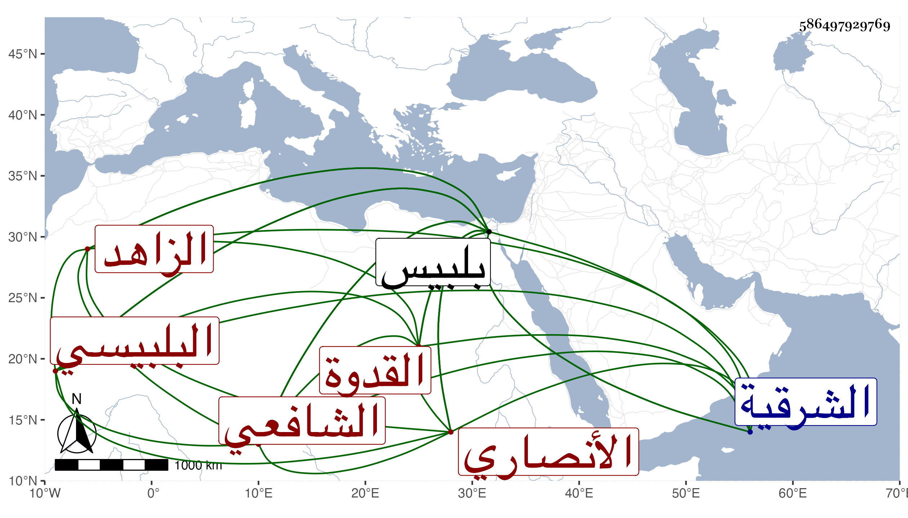

0902Sakhawi.DawLamic.ITO20230111-ara1.EIS1600.586497929769
Biography ID: 586497929769
572
أحمد بن محمد بن يوسف بن أحمد بن الشيخ إسماعيل بن علي بن حجاج ابن سيف الشهاب بن الصدر بن المجد بن الجمال بن الشيخ القدوة الزاهد العارف صاحب المزار في تربة بلبيس الأنصاري البلبيسي الشافعي ويعرف بابن سيف وبابن صدر . ولد قبل سنة سبعين وسبعمائة تقريبا ببلبيس من الشرقية ونشأ بها فحفظ القرآن وتلاه لأبي عمرو على البدر حسن الغمري بفتح الغين المعجمة ومختصر التبريزي في الفقه وعرضه في شعبان سنة ثمان وسبعين على التاج محمد بن أحمد بن النعمان وأجاز له بل هو الذي كتبه بخطه برسمه وفي رمضانها على الجمال البهنسي ، وخطب في جامعي بلبيس الأعظمين العزيز والمأموني وكان يؤدي الخطابة بصوت جهوري وله رغبة تامة في تأديتها وربما شهد مع كون وجاهته أعظم من كثير من قضاة ناحيته فإنه من أعيان أهل بلده ورؤسائها وذوي اليسار بها ، وبالجملة فهو من عدولها وعنده عصا من خشب القيقب ورثها من أسلافه كانوا يقولون إنها من عكاز سيدي إبراهيم بن ادهم قال وكان القاضي برهان الدين بن جماعة وغيره من أهل العلم ينزلون عندنا ويتبركون بها وكان يقول إن عمه موفق الدين بن سيف الدين كان من المسندين وإن الولي العراقي ممن أخذ عنه قال وكذا الجمل العرياني . قلت وعم والده وهو إسماعيل بن أحمد خاتمة من حدث عن المنذري بالإجازة وله ترجمة في المائة قبلها . ولهم قريب أيضا اسمه أحمد بن عبد الله بن محمد بن علي بن حجاج مترجم في ابن رافع وغيره ، أجاز لي صاحب الترجمة ومات وقد جاز المائة سنة بضع وخمسين تقريبا .
